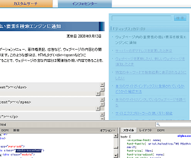

robots-nocontent でキーワード密度を最適化
最近は内部リンクを増加させようと思って、ブログのサイドバーにいろいろと内部リンクを貼り付けてるんですけど、やっぱブログのキーワード密度がけっこう変わってきちゃうのかなって気もしないではないです。
キーワード密度の最適化は、ブログSEO的な効果としてはどうなんだろって気もするんですが、最新記事欄でいろんなことを書いていると、その都度、ブログキーワードの出現頻度が変化しちゃうと思うんです。
ヤフーのサイトエクスプローラーによると robots-nocontent というタグを使えば、ウェブページ内の重要性の低い要素をヤフーの検索エンジンに知らせることができるようなので、ちょっと試してみました。
robots-nocontent と nofollow タグの SEO 違い
robots-nocontent はヤフー検索エンジン用のもののようなんですが、似たような html タグに、ほぼグーグル専用？の rel=nofollow というタグがあったりもします。
rel=nofollow という html タグを a href のアンカーリンクにしのばせておくと、アンカーテキストやページランクの受け渡しを無効にしてしまうタグのようなんです。
やっぱ、グーグルではページランクあれこれのシステムがあるので、参照リンクのアンカーリンク関係にしのばせる rel=nofollow タグが重要になると思うんです。
けれども、ヤフーの場合は、やっぱ関連性のないことかいてたらあんましっていう印象があるんで、キーワード密度なんかが大事になるんじゃないかなって気がするんです。
わたしの印象では、rel=nofollow タグはページランク調節機能で、 robots-nocontent タグはキーワード密度調節機能といった印象が強いんですが、どう使えばいいんだろう？って感じなんでヤフーヘルプをみてみました。
robots-nocontent の使い方
ヤフーサイトエクスプローラーのヘルプを見てみると、この robots-nocontent タグというのは、class 属性にしのばせておくと、「ウェブページの主な内容とは関連性の低い内容であることを、YSTに通知できます」とのことみたいです。
ウェブページ内の重要性の低い要素を検索エンジンに通知（※YSTからGoogleへ移行）
div タグや段落タグなど、いろんな要素の class 属性に robots-nocontent タグを使用することができるようなんです。使い方はこんな感じです。
- <div class="robots-nocontent">関連性の低い要素</div>
- <span class="robots-nocontent">関連性の低い要素</span>
- <p class="robots-nocontent">関連性の低い要素</p>
著作権とかなんとかの部分は当然使用するべきとは思うんですけど、けっこう微妙なのは、カテゴリリンクや最新記事の内部リンクが入っているナビゲーション部分じゃないかなって思います。
例えば、このページのキーワードといえば、キーワード密度とか、robots-nocontent とかっていう感じですが、サイドバーやカテゴリリンクの文字までふくめちゃったら、ホームページとか無料ブログとかっていうキーワード密度の方が高まっちゃうと思うんです。
でも、このページでは関連がないですけど、ブログテーマとしては関連しているんで、ぶっちゃけ、サイドバーとかはどんな感じにすればいいんだろ？っていう印象もあったりです。
そのへんのところがよくわかんなかったんで、そのヘルプのページではどんな使い方をしてるんだろ？って調べてみると、サイドバーやページトップの部分なども robots-nocontent で設定してるようなんで、気持ち関連性つよめで使ってもいいような気もします。
ファイアーフォックスアドオンのFirebugでCSSを見てみるとサイドバーやヘッダー部分、フッターの部分で robots-nocontent を使用しているようです。

なので、こんな感じで、その記事と関連のないようなサイドバーやヘッダー、フッター関連の部分は robots-nocontent 属性をしのばせておけばいいのかなという気もします。
サイドバーリンクなどに含まれるそのページのコンテンツとは関連性のないキーワードを検索エンジン（ヤフー）を知らせることによって、ある程度は SEO 的なキーワード密度も最適化されるのではないかなと思います。
感じとしては、アドセンスの <!-- google_ad_section_start(weight=ignore) --> タグのヤフー版ってことだろうと思いますが、グーグルでコンテンツ用のものはないみたいです。
ただ、記事下に関連記事とかってリンクを設置している場合は、そこの部分に robots-nocontent 属性を使用してしまうと関連記事としての意味がなくなっちゃうんで、はずしといた方がいいのかなって気もするんです。
- サイトエクスプローラー日本版が登場
ヤフーもサイトマップのやつができたようなんで、ちょっと試してみました。ヤフーのサイトエクスプローラーとかってやつなんですけど、以前アメリカの方のサイトエクスプローラーを使ったきりほったらかし状態だった... - ブログの関連記事で内部リンクの作り方
ブログの関連記事一覧というのを作ろうとおもっていたものの、いまいちよい方法がわからなかったのですが、前回の記事のやり方でやってみようと思います。これはトラックバック機能を利用したものですが、やってみる... - ブログでヤフーのSEO対策
当ブログでは最近、ヤフーからのアクセスがグーグル検索よりも上回ってきた傾向があるんですけど、いろいろなヤフーSEO対策的なことをごにょごにょしてたんで、どれがそのSEO要因だかいまいちつかめないんです... - ブログで rel=nofollow の使い方
ブログでもリンクタグの属性に rel="nofollow" を利用するといいとは思いますが、どのような時に使用すればいいのかという素朴な疑問がでてきてしまいます。 グーグルやヤフーでは rel="n...